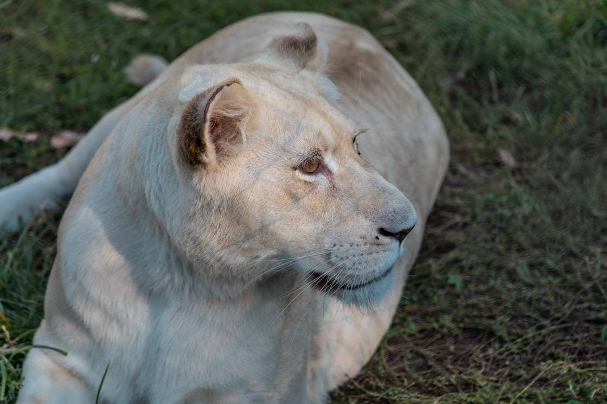
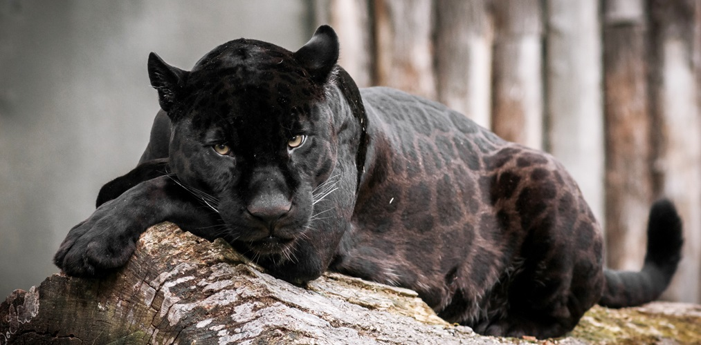

Životinja: Lav
Naučno ime: Panthera leo
Životni vek: 10 - 18 godina
Visina: 70 - 120 cm
Porodica: Mačaka - Felidae
Masa: 180 - 255 kg
Lav je veliki sisar iz porodice mačaka i jedan od „velikih mačaka“ roda
Panthera. Mužjak lava, lako prepoznatljiv po svojoj grivi, u proseku
teži između 180-255 kilograma. Ženke su manje i teže od 110-155
kilograma. U divljini, lavovi žive oko 10-18 godina, dok u
zatočeništvu preko 20 godina. Nekada su živeli širom Afrike, Azije i
Evrope, dok se danas u divljini mogu naći samo u Africi i Indiji. Žive
u savanama i love u čoporu. Mužjak lava je druga najveća mačka na
svetu, jedina koja ima grivu i rep koji završava čuperkom. Mišićavo
telo lavice prati liniju njenog skeleta. Ona ima okruglu glavu, kratko
lice, gipko telo, prilično duge noge i dugačak rep koji joj, kao
teškoj životinji, pomaže da održi ravnotežu kad skoči na plen. Sa obe
strane lica se nalaze osetljivi brkovi i pomažu joj da se snađe u
mraku. Lavica nema grivu jer bi ona omela njenu delotvornost u lovu.
Zahvaljujući grivi, mužjak čak izgleda veći nego što stvarno jeste.
Ona može da mu pomogne da zastraši i otera druge lavove.

Mačke

Životinja: Crni panter
Naučno ime: Panthera pardus
Životni vek: 12 – 15 godina
Visina: 60 - 70 cm
Porodica: Mačaka - Felidae
Masa: 30 - 90 kg
Crni panter je naziv za bilo koju od velikih mačaka sa potpuno crnim krznom (melanizam). Najčešće se pod terminom crni panter misli na crnu varijantu leoparda, a u Južnoj Americi — crna varijanta jaguara. Melanizam kod mačaka je genetički određena osobina, koja ne utiče na plodnost ili kvalitet života, niti smeta nosiocima da se ukrštaju sa nemelanističnim jedinkama. Crni leopard je najčešća vrsta crnog pantera.
Naučno ime: Panthera pardus
Životni vek: 12 – 15 godina
Visina: 60 - 70 cm
Porodica: Mačaka - Felidae
Masa: 30 - 90 kg
Crni panter je naziv za bilo koju od velikih mačaka sa potpuno crnim krznom (melanizam). Najčešće se pod terminom crni panter misli na crnu varijantu leoparda, a u Južnoj Americi — crna varijanta jaguara. Melanizam kod mačaka je genetički određena osobina, koja ne utiče na plodnost ili kvalitet života, niti smeta nosiocima da se ukrštaju sa nemelanističnim jedinkama. Crni leopard je najčešća vrsta crnog pantera.


Životinja: Tigar
Naučno ime: Panthera tigris
Životni vek: 10 – 15 godina
Visina: 70 - 120 cm
Porodica: Mačaka - Felidae
Masa: 120 – 2500 kg
Tigar je sisar iz porodice mačaka i jedan od četiri vrste „velikih mačaka“ roda Panthera. On je vrhunski predator i najveća živa mačka na svetu. U brojnim istorijskim mitovima istočnjačkih zemalja tigar je kralj svih zveri. Bengalski tigar je najpoznatija podvrsta i sačinjava približno 80% ukupne populacije tigrova. Živi u Bangladešu, Butanu, Mjanmaru, Nepalu i Indiji. Kao ugrožene vrste, većina svetskih tigrova danas živi u brizi ljudi. Iako se svaka podvrsta razlikuje, generalno, mužjaci tigrova teže između 120 i 250 kilograma, a ženke između 90 i 150 kilograma. Prosečno mužjaci su dugački između 2,4 i 3,2 m, dok su ženke između 2,1 i 2,75 m dugačke. Sumatranski tigrovi su najmanji od svih tigrova, dok su sibirski tigrovi najveći.
Naučno ime: Panthera tigris
Životni vek: 10 – 15 godina
Visina: 70 - 120 cm
Porodica: Mačaka - Felidae
Masa: 120 – 2500 kg
Tigar je sisar iz porodice mačaka i jedan od četiri vrste „velikih mačaka“ roda Panthera. On je vrhunski predator i najveća živa mačka na svetu. U brojnim istorijskim mitovima istočnjačkih zemalja tigar je kralj svih zveri. Bengalski tigar je najpoznatija podvrsta i sačinjava približno 80% ukupne populacije tigrova. Živi u Bangladešu, Butanu, Mjanmaru, Nepalu i Indiji. Kao ugrožene vrste, većina svetskih tigrova danas živi u brizi ljudi. Iako se svaka podvrsta razlikuje, generalno, mužjaci tigrova teže između 120 i 250 kilograma, a ženke između 90 i 150 kilograma. Prosečno mužjaci su dugački između 2,4 i 3,2 m, dok su ženke između 2,1 i 2,75 m dugačke. Sumatranski tigrovi su najmanji od svih tigrova, dok su sibirski tigrovi najveći.